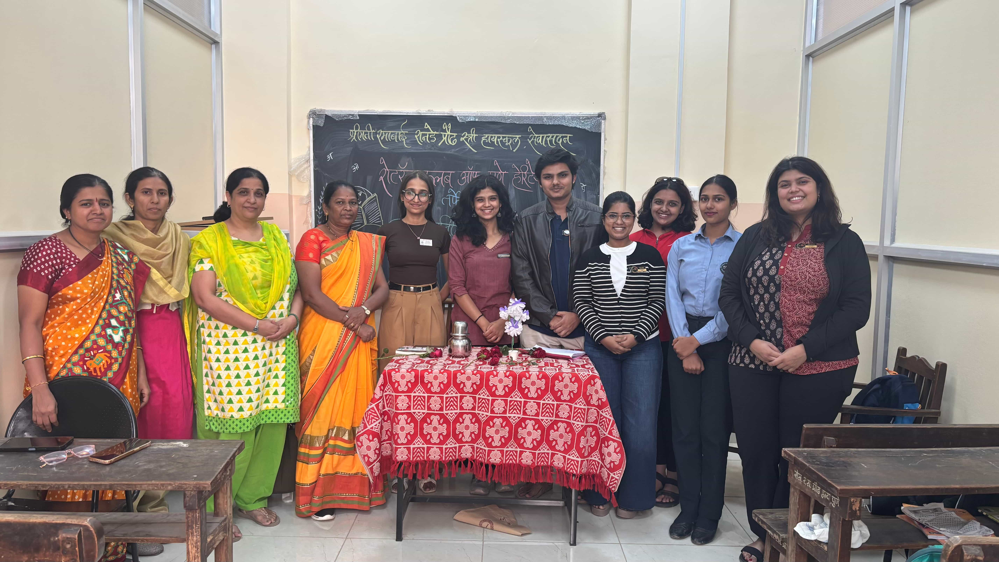

Community Service
Pages of Hope
A book donation initiative supporting students through access to learning resources and meaningful interaction.

Event report
Event Summary
About the Event
Pages of Hope was a book donation drive where Rotaract Club of Pune Heritage contributed books and created a small interaction opportunity with students. The project reflected RCPH's belief that simple, thoughtful contributions can support learning and create lasting impact.
Why it mattered
Access to books can make learning more approachable for students. By bringing together members, collaborators, and beneficiaries, the initiative turned a straightforward donation into a meaningful moment of connection and encouragement.
Key highlights
- 20+ books donated for student learning support.
- Students supported with access to useful learning resources.
- Collaboration with Rotaract Club of SSPU.
- Focused on education, community service, and youth-led impact.
Impact / outcome
The event helped channel donated books toward students who could use them, strengthened inter-club collaboration, and gave members a practical way to serve through education-focused community action.
At a glance
Event Details
- Date
- 2025-08-29
- Avenue
- Community Service
- Location / Mode
- Pune, Maharashtra | In person
- Hosted by
- Rotaract Club of Pune Heritage
- In collaboration with
- Rotaract Club of SSPU
- Beneficiaries
- Students receiving donated learning resources
- Participants / attendance
- RCPH members, SSPU collaborators, and student beneficiaries
- RIY
- 2025-26
Gallery
A few glimpses from the Pages of Hope initiative and its education-focused community service work.


“Every event at RCPH is a chance to create, connect, and contribute.”